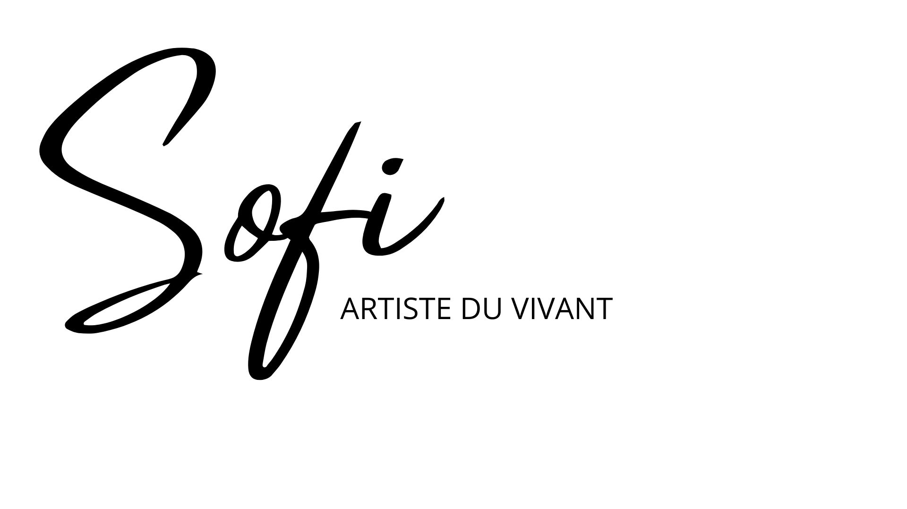
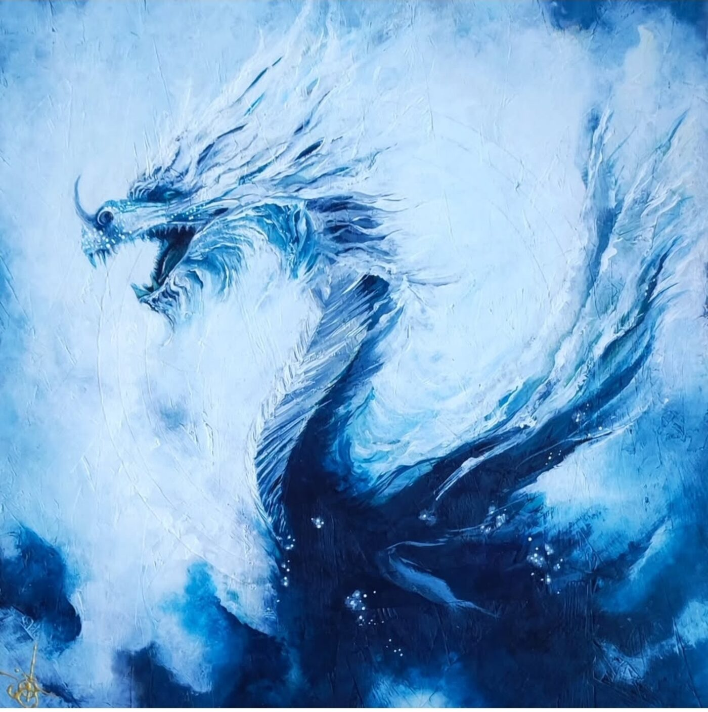
Révéler ce qui nous relie, ce qui parfois échappe aux mots.
© Sofi — artiste du vivant
Je suis Sofi. Artiste du vivant. Je suis stable, solide et profondément ancrée. Je suis celle qui cherche la beauté, les couleurs et la lumière. Amoureuse de la nature, de la musique, de la danse et du mouvement. Passionnée par les relations humaines et fascinée par ce qui relie les êtres. Je choisis de nourrir la joie. Je mets un point d'honneur à prendre plaisir dans tout ce que je fais. Créer, partager, transmettre, apprendre… chaque expérience est une occasion de célébrer le vivant. Un brin loufoque, j'entretiens ma part de fantaisie. Éternelle optimiste, je crois que la beauté peut transformer un regard, une journée… parfois davantage. J'essaie de rendre le monde un peu plus beau… et je continue d'y croire, obstinément.
Créer est une nécessité. Sortir des cadres. Ne pas rester figée. Explorer, sentir, vivre en présence, en lien…
Bien que formée aux arts appliqués, je suis grandement autodidacte. Mon inspiration naît de la vie, des émotions, des rencontres et de ces instants fugaces qui laissent une empreinte.
Je révèle. C'est mon travail d'artiste. Je suis une artiste du vivant. J'aspire à montrer ce qui est beau, parfois même ce qui est invisible pour les yeux. J'invite à la contemplation, j'espère créer un moment d'arrêt, de prise de conscience ou juste une respiration.
Je communie avec la nature, parle aux dragons et favorise le travail des fées. Je suis ancrée, consciente et présente au vivant. Je choisis mon énergie et la manière dont je l'utilise, autant de magie qui traverse mes œuvres.
Chaque œuvre est une tentative de rendre perceptible ce qui nous relie, ce qui nous traverse et ce qui, parfois, échappe aux mots.
Chaque rencontre est une graine. Ce qui croise mon chemin dépose en moi des fragments d'histoire, de lumière, parfois de blessures. J'accueille avec délicatesse, je reconnais et transforme. Mon atelier est un creuset. Alors naissent des œuvres qui révèlent une vibration, une présence, une part de vivant.
Je travaille principalement l'acrylique sur bois, supports de récupération, ou toutes sortes de surfaces (murs, béton, portes de garages…) que j'associe parfois au collage ou à d'autres matières. Les techniques évoluent et sont au service de l'intention, jamais une finalité.
Les couleurs occupent une place essentielle dans mon travail. Entre figuration et abstraction, je cherche à sentir l'essentiel, à trouver une forme d'harmonie. L'émotion, la sensibilité, l'énergie, sont les fils conducteurs de chacune de mes créations.
Trois axes de travail…
Une rencontre, une personne, un paysage, ou encore une demande particulière. J'aime cette façon de travailler, d'aborder une œuvre. Il s'agit pour moi de me connecter en profondeur avec un sujet, quel qu'il soit, d'en saisir l'essentiel afin de le traduire sur la toile.
Dans un premier temps, je rencontre le sujet, j'essaie d'en intégrer toutes les subtilités, de le comprendre, de le ressentir. Puis, une fois devant la toile, après avoir défini un projet, je laisse faire mes émotions, je ne suis plus du tout dans le contrôle, le mental est mis de côté pour laisser place aux sens. Essentiel…
« Toute pensée est une sensation contrariée. » — Emil Cioran
« Entre la connaissance et la sensation, le rapport c'est le sentiment. » — George Sand
Plus de toile, envie de peindre… Je décide donc de chercher d'autres supports, et très vite, je me rends compte que mon geste, le choix des couleurs ou l'émotion qui se dégage de l'œuvre, dépendent pleinement du choix de ce support.
C'est ainsi que je profite (dans l'idée également de recycler et de réutiliser des matériaux) de ce qui m'est offert. Rester ouvert et attentif au monde et à ses possibles, l'inspiration est partout.
« N'attendez pas l'inspiration, elle vient pendant que l'on travaille. » — Henri Matisse
Cette approche de la peinture est pour moi la plus spontanée. Il s'agit simplement de capter un instant, avec toute l'émotion qui l'habite. C'est une façon de travailler très personnelle, je ne sais jamais quel sera le résultat de mon effervescence sur la toile.
Parfois, une toile me permet de comprendre les émotions qui me traversent, c'est alors un moment intense pour moi, et c'est également ce qui m'aide à grandir et à progresser artistiquement et dans la vie.
« Tu n'as aucun besoin de contrôler tes émotions. Les émotions sont naturelles, elles passent comme la météo qui change. Parfois c'est de la peur, parfois de la tristesse ou encore de la colère. Les émotions ne sont pas un problème. La clé est de transformer l'énergie de l'émotion en action constructive. » — Le guerrier pacifique, Dan Millman
L'acrylique est aujourd'hui ma peinture de prédilection. J'apprécie particulièrement son intensité, sa richesse de couleurs et sa capacité à conserver cette intensité dans le temps. J'achète principalement mes peintures auprès de La Maison des Beaux-Arts, notamment pour la diversité de leur gamme et la simplicité que cela représente dans mon organisation.
Je complète parfois l'acrylique avec d'autres médiums — encre, aquarelle, pastel, collage de matériaux… Aucune technique n'est réellement exclue : je cherche avant tout celle qui me permettra d'obtenir l'effet ou la sensation recherchée.
À terme, j'aimerais explorer davantage les peintures naturelles, tout en retrouvant les qualités qui me sont essentielles dans l'acrylique : l'intensité de la couleur et sa tenue dans le temps.
Je n'ai pas encore optimisé mes achats de peinture : je n'ai pas suffisamment comparé les fournisseurs, les tarifs ou les conditionnements. C'est un axe de progrès de mon activité.
Je m'équipe assez peu en outils spécifiques. Les pinceaux restent indispensables, mais j'aime surtout détourner des objets ordinaires pour créer des traces : papier texturé, carton ondulé, papier bulle, matières récupérées… Ces objets portent déjà en eux une manière de laisser une empreinte.
Je peux alors partir d'une trace que je n'ai pas entièrement maîtrisée et construire la suite de l'œuvre à partir de ce qui apparaît. Le hasard a ainsi une place importante dans mon processus. Je ne cherche pas toujours à contrôler le résultat dès le départ. Une texture, une coulure, une empreinte ou une rencontre inattendue entre deux matières peut devenir le point de départ du geste suivant.
Je cherche autant que possible à ne pas acheter de supports neufs. Je préfère récupérer ce qui existe déjà et lui donner une nouvelle vie. Anciennes toiles, cadres trouvés chez Emmaüs, chutes de bois, supports récupérés ici et là… Je peux réparer un cadre, recréer un fond, repeindre une ancienne œuvre ou intégrer le support lui-même à la création.
La récupération n'est donc pas seulement une question d'économie ou de démarche environnementale. Elle nourrit aussi mon travail : un support porte une histoire, des traces, des imperfections. Il peut influencer ce que je vais créer. Je ne choisis pas toujours le support avant l'œuvre. Parfois, c'est le support qui me dit ce que l'œuvre peut devenir.
Lorsque je travaille directement dans un lieu, le support n'est plus choisi par moi. Il est là. Un mur, une porte de garage, une façade, un espace public… Chaque surface possède ses contraintes, ses dimensions, sa lumière, son environnement et son histoire. Le geste doit alors s'adapter au lieu.
La peinture devient une création in situ, pensée pour un espace particulier et pour celles et ceux qui vont le rencontrer. C'est particulièrement visible dans les fresques : ici, le support n'est plus simplement une surface sur laquelle je peins. Il fait partie de l'œuvre.
Ma façon de travailler est aussi faite de ces choix, de ces contraintes et de ces expérimentations.
Coût des matières · fournisseurs · temps d'approvisionnement · stockage · récupération · transport · contraintes techniques des fresques · évolution vers des peintures naturelles · choix environnementaux.
Je pars d'une émotion, d'une rencontre, d'une image, d'une matière ou parfois simplement d'une envie de couleur. Mes œuvres explorent le vivant sous différentes formes : animal, végétal, humain, paysage, symbole ou abstraction.
Certaines apparaissent progressivement dans le geste et la matière, d'autres naissent d'une intention plus précise. Je laisse toujours une place à ce qui peut surgir en cours de création.
Chaque œuvre est une rencontre entre ce que je cherche et ce que la peinture me révèle.
Je ne vois pas l'art uniquement comme une manière de créer ou de représenter. Il peut aussi ouvrir un espace où quelque chose se déplace : le regard que l'on porte sur soi, sur son corps, sur les autres ou sur le monde.
À travers le portrait, la peinture corporelle ou encore le travail autour des formes et des symboles, je cherche à créer des expériences qui invitent à regarder autrement, à révéler ce qui était parfois enfoui ou invisible, et à laisser émerger une autre perception de soi ou du vivant.
L'œuvre devient alors plus qu'un objet : elle peut être une expérience, un miroir, un révélateur ou un espace de transformation.
Révéler l'identité sensible d'un lieu, d'un territoire ou d'une organisation. Parce que le vivant mérite notre présence.
Texte
Parce que le vivant mérite qu'on s'y attarde.
Lire le manifeste ↗Je désire intensément la liberté du lien simple et essentiel, la liberté de notre lien intime et puissant avec la terre, avec ce qui respire, avec ce qui ne demande rien d'autre que de la présence. Parce que c'est là que tout commence. Quand je ralentis, quand je suis posée, ancrée, calme, à l'écoute de mon corps et du vivant qui m'entoure, alors quelque chose apparaît.
Je suis sensible à ce qui ne se voit pas. Le monde est habité par beaucoup plus que ce que nos yeux peuvent voir. Présences silencieuses, énergies particulières, puissantes, équilibrantes, autant de réalités qui nous relient à quelque chose de plus vaste que nous. C'est cet espace que j'explore.
Au fil de mon exploration, j'aspire à révéler ce qui habite le monde. Révéler l'identité sensible des lieux, des territoires et des organisations est aujourd'hui l'un des chemins par lesquels cette recherche prend forme.
Une cartographie sensible cherche à révéler ce qui rend un territoire unique. Chaque lieu possède une mémoire, des récits, des symboles, des paysages, des savoir-faire et des liens invisibles qui façonnent son identité.
À travers la rencontre, l'observation et la création artistique, je cherche à faire émerger cette identité sensible et à lui donner une forme visible. Chaque œuvre devient alors un point d'ancrage. Peu à peu, ces points composent une cartographie vivante faite de lieux, d'histoires et de rencontres.
Une œuvre peut révéler :
Chaque lieu possède une mémoire, des récits, des symboles et des liens invisibles. Mon travail consiste à les écouter, les révéler et leur donner forme à travers une œuvre singulière.
La cartographie est ouverte. Les prochains points d'ancrage naîtront des territoires, lieux et organisations qui souhaiteront prendre part à cette aventure artistique.
📍 Point d'ancrage n°001
47°51'49.3"N — 0°39'57.7"W
Découvrir ▾Commune rurale du Sud-Mayenne, au cœur de l'ancien Haut-Anjou, Fromentières porte une histoire ancienne, profondément liée à sa terre, à ses paysages, à l'eau et aux femmes et aux hommes qui l'ont façonnée. Son nom lui-même évoque le froment et rappelle la richesse agricole de ce territoire. Son patrimoine raconte également cette profondeur historique : l'église Saint-Pierre remonte au Moyen Âge, tandis que châteaux, manoirs, moulins et anciens domaines témoignent des différentes strates de son histoire.
Il existe, à Fromentières même, une présence ancienne et surprenante de la figure du dragon. Au manoir de Beaubigné, le patrimoine sculpté fait apparaître Saint-Michel terrassant le dragon, au milieu d'un décor où se côtoient végétal, chimères, feuillages et figures symboliques.
Le dragon devient alors une créature gardienne, une figure de force, de mémoire et de mystère. Une manière de faire surgir ce qui était là, parfois invisible, et de donner une forme contemporaine à quelque chose qui appartient déjà profondément au lieu.
Pour ce premier point d'ancrage, j'ai choisi de ne pas simplement représenter Fromentières : j'ai cherché à en révéler une présence forte.
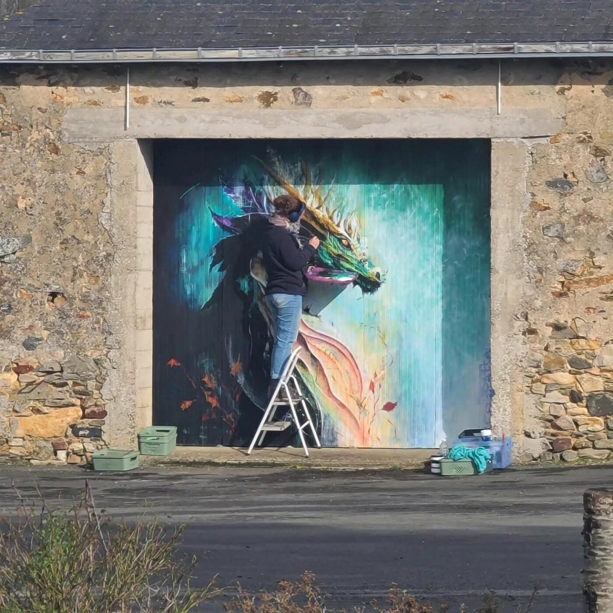
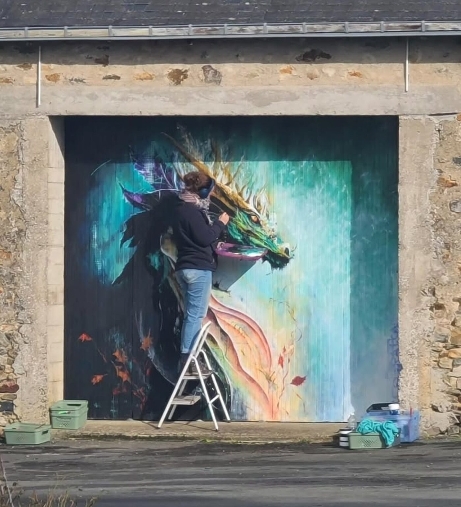
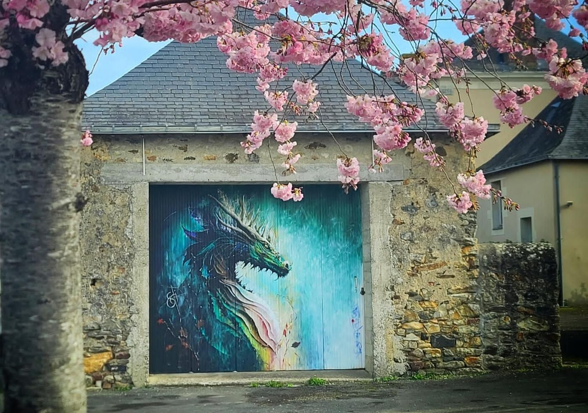
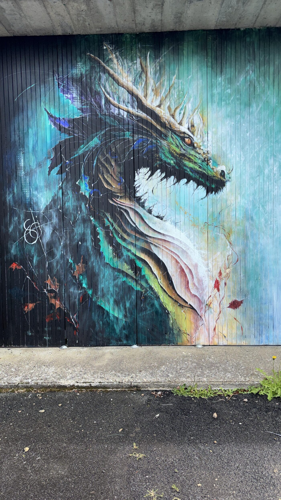
📍 Point d'ancrage n°002
47°48'29.5"N — 0°42'27.6"W
Découvrir ▾À Château-Gontier-sur-Mayenne, sous la passerelle de la Maroutière, ce deuxième point d'ancrage est né d'une commande de la Ville pour mettre en lumière le Refuge de l'Arche et les animaux qu'il accueille.
Depuis 1968, l'histoire du Refuge est celle d'une rencontre entre des humains et des animaux en détresse. Accueillir, soigner, protéger, mais aussi raconter et sensibiliser : le Refuge est devenu un véritable lieu de vie et de transmission.
La fresque fait entrer cette histoire dans l'espace public. Elle donne un visage aux pensionnaires du Refuge et transforme ce passage en espace de rencontre, de visibilité et d'indication vers le lieu qui les protège.
L'arche des possibles devient ainsi un point d'ancrage particulier : une œuvre qui ne représente pas seulement des animaux, mais qui raconte le soin, le refuge, les histoires singulières et la possibilité d'une autre vie.
Ici, le vivant ne demande pas seulement à être regardé. Il demande à être accueilli.
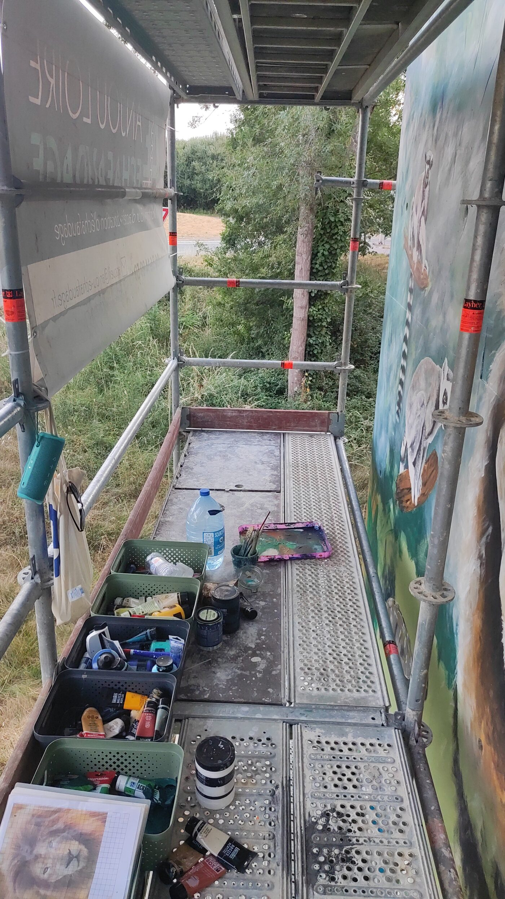
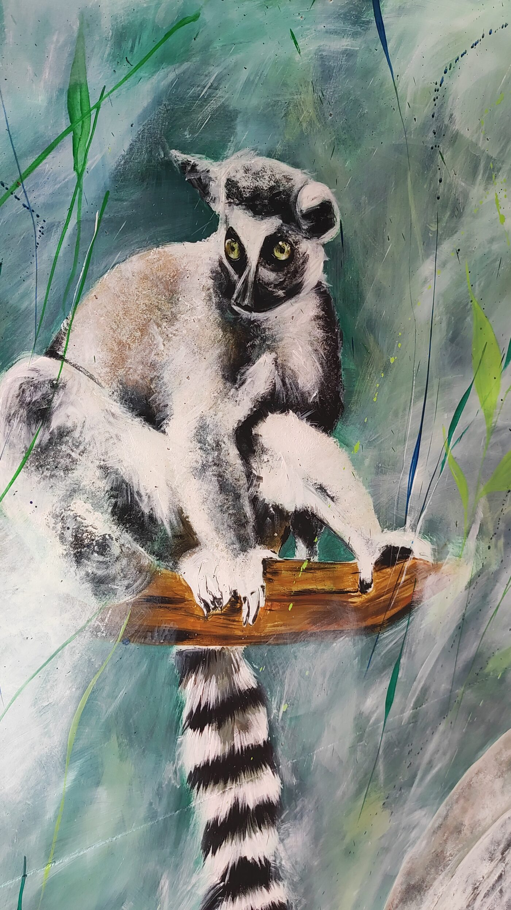
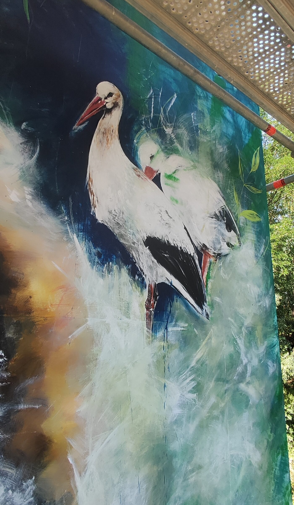
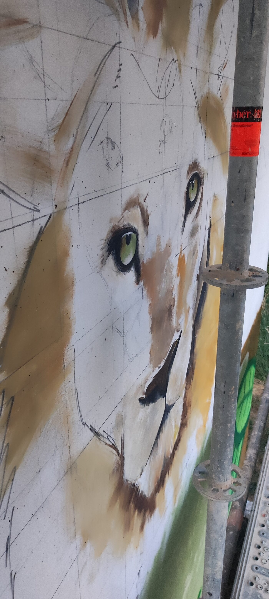
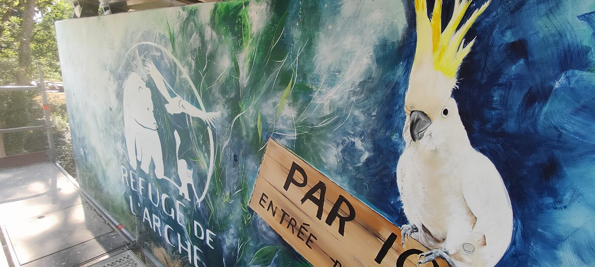
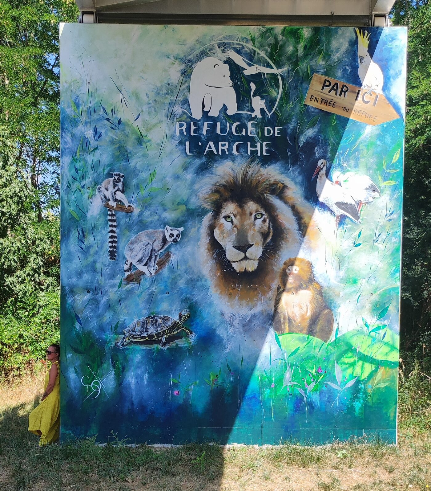
📍 Point d'ancrage n°003
Le prochain point d'ancrage sera bientôt révélé.
Je suis actuellement micro-entrepreneure. Ce régime m'offre un cadre simple pour exercer mon activité indépendante. Mais mon activité artistique prend aujourd'hui une place de plus en plus importante et évolue vers de nouveaux types de projets. Je m'interroge donc sur la pertinence de mon cadre actuel.
La question se pose aujourd'hui : quel cadre correspond le mieux à mon activité artistique actuelle et à son évolution ?
Je cherche notamment à comprendre ce que changerait une activité relevant du régime des artistes-auteurs, et quelles seraient les conséquences en matière de cotisations, de protection sociale, de fiscalité et de gestion.
L'Urssaf propose aujourd'hui un dispositif spécifique pour les artistes-auteurs et un simulateur permettant d'estimer leurs cotisations ; les revenus artistiques peuvent relever de catégories différentes selon leur nature.
Documents à venir.
Le prix de mon travail est encore un sujet de réflexion. Une œuvre représente du temps de recherche, des heures de création, des matières, un support, mais aussi une expérience, une histoire et une singularité qui ne sont pas directement mesurables.
Comment transformer tout cela en prix ? Comment savoir si mes tarifs me permettent réellement de vivre de mon activité ? Et comment faire évoluer mes prix lorsque mon expérience, mes projets et mes charges évoluent ?
Pour mes tableaux, j'ai choisi de fixer un prix de référence de 700 €/m². Cette méthode me permet d'adapter automatiquement le prix au format de l'œuvre.
| Format | Prix indicatif |
|---|---|
| 40 × 40 cm | 112 € |
| 50 × 50 cm | 175 € |
| 60 × 80 cm | 336 € |
| 80 × 80 cm | 448 € |
| 100 × 100 cm | 700 € |
| 100 × 120 cm | 840 € |
Cette règle apporte une certaine cohérence, mais elle ne raconte pas toute l'histoire d'une œuvre. Deux tableaux de même dimension peuvent demander un temps de travail très différent, utiliser des matériaux différents et avoir une présence artistique complètement différente.
Exemples :
• Une fresque de 10 m² → 250 € + (10 × 300 €) = 3 250 €
• Une fresque de 20 m² → 250 € + (20 × 300 €) = 6 250 €
Cette construction me permet de distinguer le travail préparatoire et les fournitures de la réalisation elle-même.
Mes prix sont-ils suffisamment élevés pour valoriser mon travail et permettre à mon entreprise de vivre, tout en restant accessibles aux personnes auxquelles je souhaite m'adresser ?
Mon activité artistique se développe à travers plusieurs supports de communication.
Mon site internet et mes réseaux sociaux constituent mon espace principal : ils me permettent de présenter mon univers, mes œuvres, mes projets et aujourd'hui la Cartographie sensible du vivant. Ils servent également de point de contact pour les personnes qui souhaitent découvrir mon travail ou me proposer un projet.
Ma communication est elle aussi en construction. Pendant longtemps, elle a principalement servi à présenter mes œuvres et mes réalisations. Aujourd'hui, avec la Cartographie sensible du vivant, elle doit aussi me permettre de faire comprendre ma démarche, raconter mes projets et toucher de nouveaux publics : particuliers, entreprises, collectivités, associations ou lieux de vie.
Comment communiquer sur mon travail artistique sans simplement montrer ce que je fais, mais en donnant envie d'entrer dans mon univers et de construire un projet avec moi ?
Contenu à venir.
Dans cet espace, seront déposées toutes les ressources qui auront été demandées, et dont vous pourriez avoir besoin.
Un espace d'échange intégré pour poser des questions, partager des travaux et discuter avec Sofi. Connectez-vous avec un compte GitHub (gratuit) pour poster.
Hébergé sur GitHub Discussions via Giscus. Sofi reçoit un email à chaque nouveau message (elle « watch » le repo).